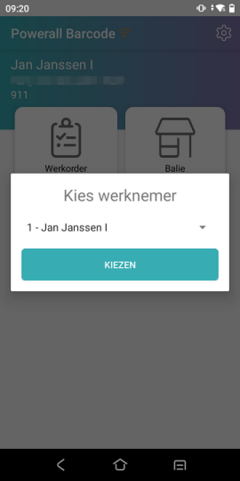
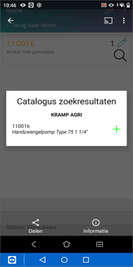
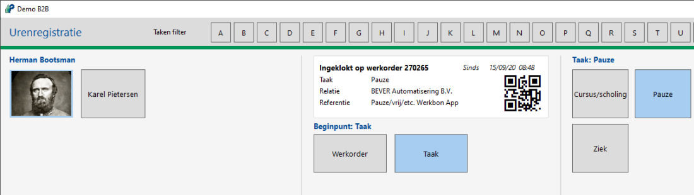
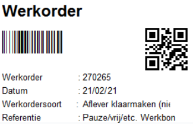
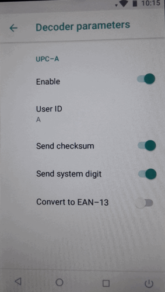
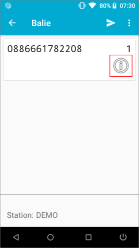
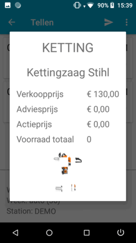
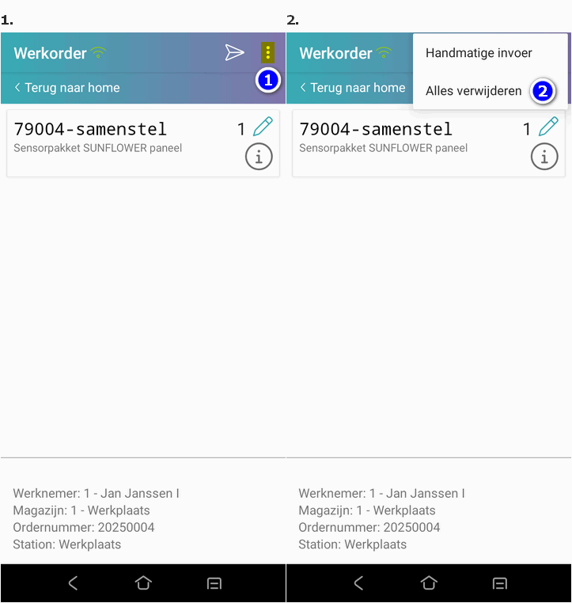
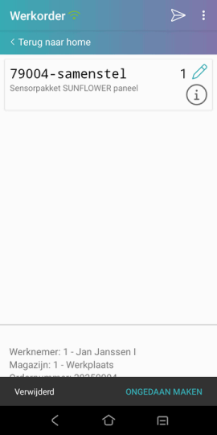

De Barcode app is beschikbaar in de Google Playstore, zie Powerall Barcode.
De Powerall Barcode app is alleen te gebruiken op de 'Powerall' barcodescanner.
Opmerking: Neem contact op met onze helpdesk om te inventariseren of dit binnen uw organisatie toepasbaar is. Zij schakelen in overleg de planning in, om een consultant in te plannen.
Update Barcode app.
De barcodescanner-software is geüpdatet. Bij eerdere versies was het niet mogelijk om op de scanner te controleren of een artikel bestond, en het terugkijken van gescande onderdelen was omslachtig. De nieuwe Barcode App biedt aanzienlijk meer functionaliteit en intelligentie.
Artikelen kunnen eenvoudig worden gescand, inclusief EAN-codes en equivalentnummers. Dankzij de realtime verbinding met de Powerall-database wordt direct het juiste artikel opgezocht. Indien een artikel niet wordt herkend, verschijnt er een foutmelding.
De controle via een pop-up bij het uitlezen is komen te vervallen. Deze controle vindt direct plaats tijdens het scannen. Het uitlezen gebeurt voortaan via een directe verbinding met de server of hoofdcomputer, in plaats van via een werkstation.
Voor het achteraf bekijken van gescande gegevens blijft het Overzicht barcode scanningen beschikbaar, waarin alle gescande informatie wordt weergegeven.
Belangrijkste verbeteringen:
Onze doelstelling is om een intelligente scanner te ontwikkelen met steeds meer functionaliteiten. Daarom is de 'pop-up met gescande artikelen' niet langer nodig of beschikbaar. Bij Overzicht barcode scanningen zijn nog steeds alle gescande gegevens te zien. Belangrijkste verbeteringen:
Bij het scannen van een artikel wordt direct de artikelcode weergegeven.
Artikelen kunnen worden gescand op zowel EAN-code als equivalentcode.
Verzenden
De artikelen worden vóór verzending gecontroleerd op geldigheid.
Bij het verzenden worden de gegevens direct en automatisch verwerkt, zonder dat verwerken Uitlezen barcode scanner open hoeft te staan.
Uitzonderingen zijn Balie i.c.m. bonnen en Bestellen i.c.m. goedkeuren.
Bij werkorders kunnen ter info ook de klantnaam en referentie worden getoond.
Keuze werknemer:

Algemeen menu:
Tip: Het artikel aantal wordt opgehoogd met + 1 als het artikel opnieuw gescand wordt.
Een artikel kan in het menu gescand worden. De artikel info met Print Label verschijnt dan.
In de artikelregel, wordt bij de i artikelinformatie getoond.
 vanaf versie 3.31 worden ook de incl. btw prijzen getoond.
vanaf versie 3.31 worden ook de incl. btw prijzen getoond.
De eerste foto uit het artikel Dossier wordt getoond. Dit geldt voor een .jpg en .png vanaf versie 3.23 ook .jpeg bestand.
Scannen / Scanner
Het is mogelijk om ook een catalogus artikel te scannen, dat nog niet als artikel aanwezig is, vanaf versie 3.24.
Het pop-up scherm Catalogus zoekresultaten <catalogus> verschijnt:

Druk op het artikel , om dit artikel toe te voegen in eigen bestand.
Belangrijk: Als je op de Barcode scanner op een andere administratie wil gebruiken, moet je opnieuw de QR-code scannen bij Barcodescanner registeren.
Algemeen
Ja, er kunnen verschillende codes gescand worden. Een EAN-code zit bijv. in een:
Daarnaast kan ook de equivalentcode gescand worden.
In de nieuwste versie wordt de artikelomschrijving direct opgehaald, ter controle.
Ja het scannen van serienummers is mogelijk vanaf versie 3.27 versie voor zowel Powerall als Barcode app.
Het serienummer moet hierbij gescand of aangevinkt of ingegeven worden.
Ja dit is mogelijk. Om dit te doen, doorloopt u de volgende stappen:
Maak bij Onderhoud artikelen een (tekst) artikel aan, dat begint met het dollarteken $, bijv. $02 voor personeelscode 2.
Druk dit artikel via Opvragen artikelen de knop Label af.
Het volgend label wordt dan afgedrukt:

Scannen is bijv. mogelijk bij een werkorder (met de Memor1 scanner).
Ja, het is mogelijk om de QR-codes te scannen vanaf bepaalde schermen. Dit wordt ondersteund bij:

De werkorder en werkbon

Neem hiervoor contact op met de helpdesk om dit in te stellen.
Tip: Een werkbon behoeft hierdoor niet meer worden afgedrukt, om gescand te worden.
Als het niet lukt om de barcodes van Stihl te scannen, moet de instelling in de Decoder parameters voor UPC-A aangepast worden, naar de instelling zo als op de afbeelding.

Hierbij een matrix van welke artikelen er vanaf Powerall versie 3.27 en Barcode app 3.27 gescand of ingegeven kunnen worden.
| Functie | Serienummer | Kleine machine | Niet voorraad artikel | artikelstructuur | Aanmaken catalogus artikel 4 | ||
|---|---|---|---|---|---|---|---|
| Artikellijsten | Samenstelling3 | Dynamische samenstelling | |||||
| Balie geen - aantal |
ja 1 | - | - | ja, pop-up 2 | ja | ja | ja |
| Werkorder | ja + keuze sn | - | ja | ja, pop-up 2 | ja | ja, incl. komma's | ja |
| Bestellen | ja | ja | ja | ja | ja | - | ja |
| Magazijn: | |||||||
| - Tellen | ja | ja + keuze sn | ja | ja | ja | - | ja |
| - Overboeken | ja | ja | ja | ja | ja | - | ja |
| - Locatie | ja | ja | ja | ja | ja | - | ja |
Bij 3 samenstelling, wordt alleen het structuurartikel gescand.
Per functie kan dit geautoriseerd worden.
Bij 4 is personeelscode autorisatie is nodig.
Werkwijze
Ja het is mogelijk om artikel info te zien. Om dit te doen, doorloopt u de volgende stappen:
Scan het artikel in menu (Home).
of
Bij de betreffende optie bijv. Balie.
Druk op het I-symbool, (onder het aantal).

Het volgend scherm verschijnt:

Met de volgende informatie:
Verkoopprijs
Adviesprjjs
Actieprijs
Voorraad totaal
Afbeelding
Indien nodig kunnen de gescande artikelen verwijderd worden, zie volgende vraag.
Om alle artikelen te verwijderen, doorloopt u de volgende stappen:
Druk rechtsboven op de 3 puntjes boven elkaar.
De pop-up Alle regels verwijderen verschijnt
Kies voor de knop Alles verwijderen.

De pop-up Alle regels verwijderen verschijnt
Kies voor de knop JA.
Wegvegen
Het is ook mogelijk om één artikel te verwijderen, door deze weg te vegen:
Veeg het artikel naar links.
Onderstaand scherm verschijnt dan:

De pop-up Ongedaan maken verschijnt even, 1 / 2 seconden.
Tip: Gebruik de uitvouw knop  (boven U bent hier:) om alle vragen uit - of in te vouwen.
(boven U bent hier:) om alle vragen uit - of in te vouwen.
Gerelateerde onderwerpen
De Barcode app is beschikbaar in de Google Playstore, zie Powerall Barcode.
De Powerall Barcode app is alleen te gebruiken op de 'Powerall' barcodescanner.
Copyright ©